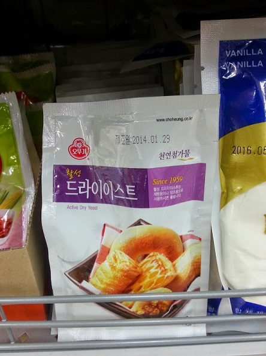
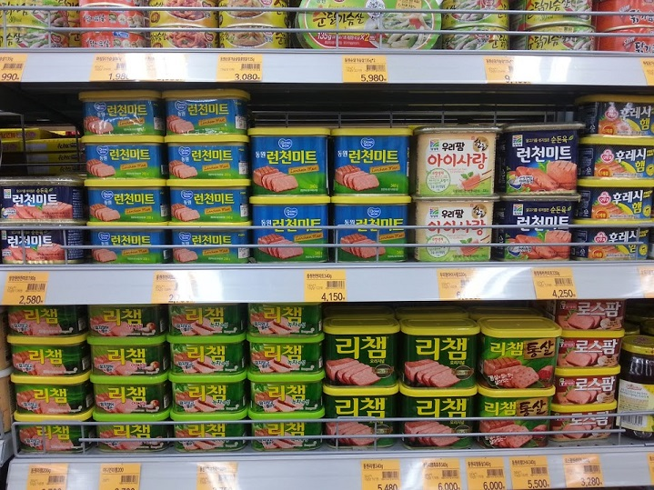
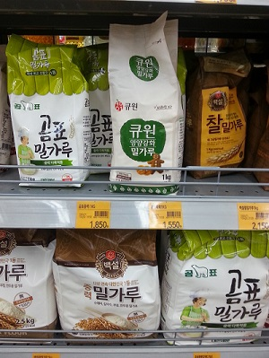

Finding the English
The Korean language is pretty easy to read once you know the alphabet, but that takes time and there are many other
websites that focus on that. Some people that come to Korea do not have time, make time or take the time to learn the
language and they can find food just fine each and every day.
This is because many of the foods (fortunately) have some English printed on them. As this picture shows.

If you look closely under the purple banner the you can see the label in English.
Unfortunately, this is not the case for all foods.

Using our keen eyesight (click the image for a larger image) we can see that there are pictures
of the product on the packaging and looking closely, we can see that
the center cans have some English on them. This looks like a wall
of canned meat (SPAM) because it is. There is some history there.
No English, No Problem
As I stated above, many products have pictures that can be used to identify the contents.
This is not always the case. Take the package of yeast for example. If I was asked to guess the contents just by the picture I would
be stumped since the picture contains both pastries and yeast bread.
A list of common ingredients:
Flour


{kind=link}